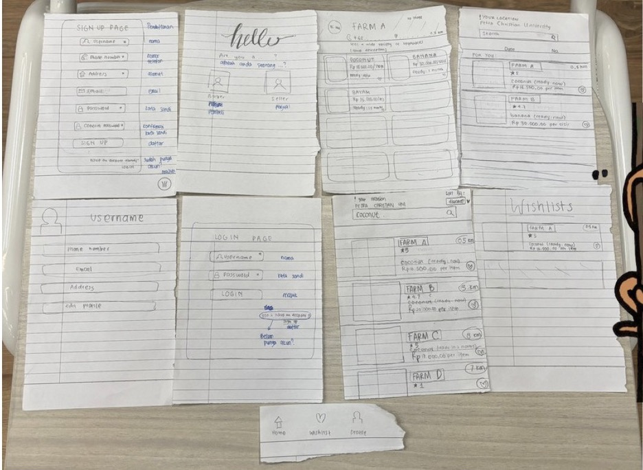
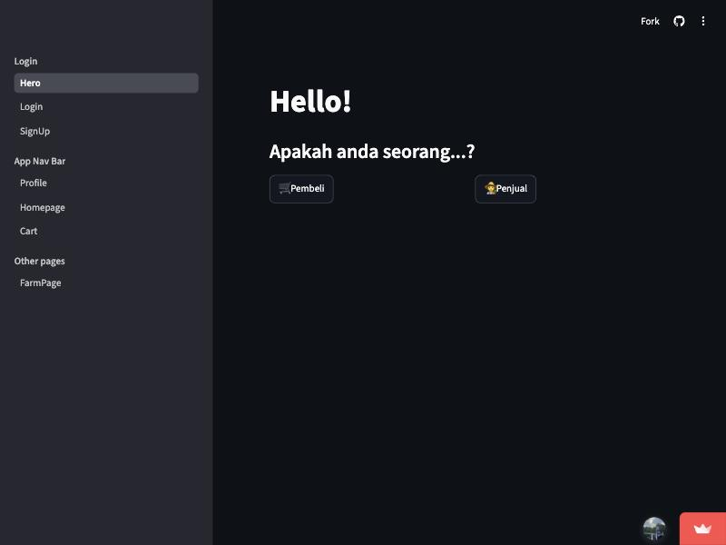

Context
A farm with produce and no buyers
On a cross-cultural trip with Petra Christian University, our mixed team visited an edu farm in Gunung Anyar, Surabaya. Small farms there grow good produce but reach few customers, and nearby households don't know what's being harvested or where to buy it. Farms lean on resellers to sell.
How might we help buyers find and buy fresh crops by connecting them with the best farms for them?
Who it's for
Two buyers and a farmer
Siti works and cooks for her kids. She shops online but doesn't know which farm has what, or when.
Tutik has a low income, limited mobility and little experience with apps, and wants to see produce before she buys it.
Budi farms a small plot. He can't see what buyers want and has few customers.
My part · product and frontend
From paper to a working app
I shaped what the product had to do for each side, then built the interface. We started on paper, and turned it into a working multi-page app in Streamlit.


- For buyers: search and sort farms by distance, see when each crop will be ready, save crops to a wishlist, then pick up at the farm. Notifications for wishlist crops were planned next.
- For farmers: a wider reach, and wishlist data that shows which crops people want
- For trust: buyers rate farms, and ratings show on every card
The "For you" page recommends well-rated produce you haven't bought yet, using collaborative filtering (ALS in PySpark) trained on users' ratings.